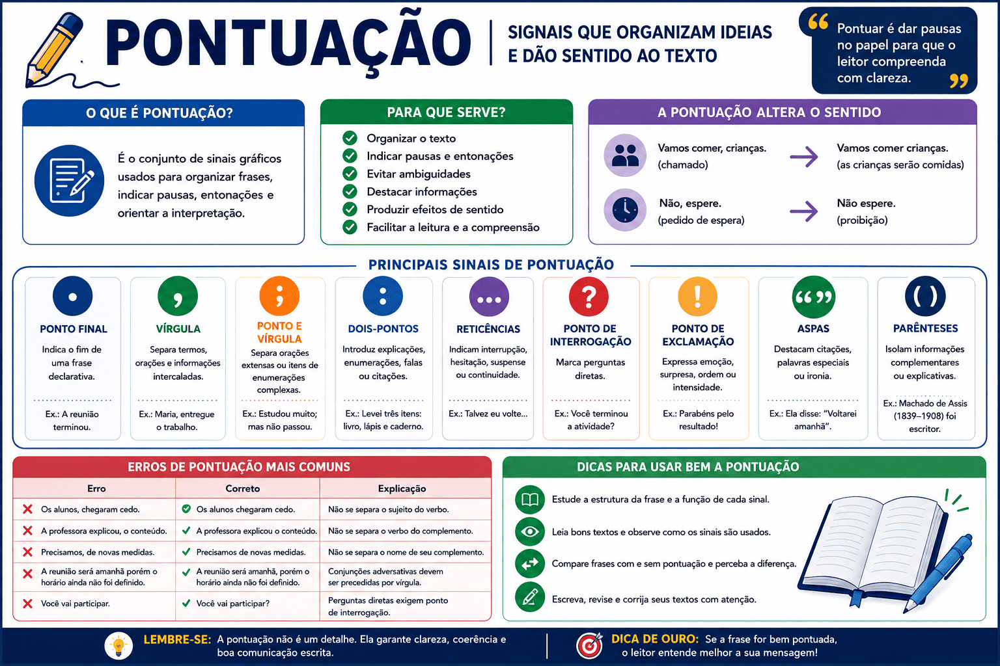

Pontuação: guia completo dos sinais de pontuação na Língua Portuguesa
A pontuação é o conjunto de sinais gráficos utilizado para organizar frases, períodos e parágrafos. Esses sinais indicam pausas, marcam a entonação, separam informações e ajudam o leitor a compreender as relações de sentido construídas no texto.
O uso adequado da vírgula, do ponto final, dos dois-pontos, do ponto e vírgula, do travessão e dos demais sinais é essencial para evitar ambiguidades e tornar a escrita mais clara, coerente e expressiva.
Neste conteúdo, você aprenderá quais são os sinais de pontuação, quando utilizá-los, quais erros devem ser evitados e como esse assunto aparece em provas, vestibulares, concursos e na redação do ENEM.

O que é pontuação?
Pontuação é o sistema de sinais gráficos utilizado para representar, na escrita, pausas, entonações, relações sintáticas e efeitos de sentido que, na fala, podem ser indicados pelo ritmo, pela voz, pelos gestos e pela expressão facial.
Ao pontuar um texto, o autor organiza as informações e orienta o leitor sobre a maneira como elas devem ser interpretadas.
Sem pontuação:
Quando a professora chegou os estudantes abriram os livros começaram a atividade e permaneceram em silêncio
Com pontuação:
Quando a professora chegou, os estudantes abriram os livros, começaram a atividade e permaneceram em silêncio.
Ideia principal: pontuar não significa apenas indicar pausas. Os sinais também organizam a estrutura sintática e ajudam a construir o sentido do texto.
Para que servem os sinais de pontuação?
Os sinais de pontuação desempenham diferentes funções na escrita.
- organizar frases e parágrafos;
- separar termos e orações;
- indicar início e fim de ideias;
- marcar perguntas e exclamações;
- introduzir explicações, enumerações e falas;
- destacar palavras e expressões;
- evitar ambiguidades;
- produzir efeitos de humor, suspense, surpresa ou ironia.
Funções essenciais da pontuação
- Função sintática: organiza a estrutura das orações.
- Função semântica: ajuda a construir e diferenciar sentidos.
- Função expressiva: marca emoção, dúvida, suspense ou intensidade.
- Função discursiva: organiza falas, citações e diferentes vozes no texto.
Quais são os principais sinais de pontuação?
| Sinal | Nome | Função principal | Exemplo |
|---|---|---|---|
| . | Ponto final | Indica o encerramento de uma frase declarativa. | A aula terminou. |
| , | Vírgula | Separa termos, orações e informações intercaladas. | Pedro, feche a porta. |
| ; | Ponto e vírgula | Separa partes extensas ou itens complexos. | Alguns estudaram; outros descansaram. |
| : | Dois-pontos | Introduzem explicações, enumerações, falas ou citações. | Trouxe três materiais: livro, lápis e caderno. |
| ... | Reticências | Indicam interrupção, hesitação, suspense ou continuidade. | Talvez eu volte... |
| ? | Ponto de interrogação | Marca perguntas diretas. | Você terminou a atividade? |
| ! | Ponto de exclamação | Expressa emoção, ordem, surpresa ou intensidade. | Parabéns pelo resultado! |
| “ ” | Aspas | Destacam citações, palavras especiais ou usos irônicos. | Ela afirmou: “Voltarei amanhã”. |
| ( ) | Parênteses | Isolam informações complementares. | Machado de Assis (1839–1908) foi escritor. |
| — | Travessão | Introduz falas ou destaca informações. | — Você vem? — perguntou Ana. |
| [ ] | Colchetes | Inserem explicações ou modificações em citações. | “Ele [o professor] explicou o conteúdo.” |
Ponto final
O ponto final indica o encerramento de uma frase declarativa. Ele também pode ser utilizado em abreviaturas.
A reunião começará às oito horas.
Os candidatos aguardaram o resultado.
Dr. — doutor
pág. — página
O ponto final encerra uma unidade de sentido. Em textos argumentativos, ele também ajuda a controlar o tamanho dos períodos e evita construções excessivamente longas.
Dica de escrita
Se uma frase estiver muito longa e apresentar várias informações, verifique se algumas ideias podem ser separadas por ponto final.
Vírgula
A vírgula é um dos sinais mais utilizados e também um dos que mais geram dúvidas. Ela serve para separar termos, orações e informações que possuem determinada função dentro da frase.
Quando usar a vírgula?
Para separar elementos de uma enumeração
Comprei livros, cadernos, lápis e canetas.
Para isolar o vocativo
Maria, entregue o trabalho.
Preste atenção, estudante.
Para isolar o aposto explicativo
Machado de Assis, importante escritor brasileiro, nasceu no Rio de Janeiro.
Para separar adjuntos adverbiais deslocados
Durante a manhã, os estudantes realizaram a prova.
Em 2026, novos projetos serão iniciados.
Para separar orações coordenadas
O estudante revisou o conteúdo, mas não realizou os exercícios.
A equipe planejou o projeto, executou as tarefas e apresentou os resultados.
Para isolar expressões explicativas ou intercaladas
A proposta, por exemplo, pode ser reformulada.
O projeto, segundo os responsáveis, será ampliado.
Quando não usar a vírgula?
Em regra, não se deve separar por vírgula termos que mantêm uma relação sintática direta.
Não se separa o sujeito do verbo
Incorreto
Os estudantes da escola, participaram do evento.
Correto
Os estudantes da escola participaram do evento.
Não se separa o verbo do complemento
Incorreto
A professora explicou, o conteúdo.
Correto
A professora explicou o conteúdo.
Não se separa o nome de seu complemento
Incorreto
Temos necessidade, de novas medidas.
Correto
Temos necessidade de novas medidas.
Atenção
A vírgula não deve ser colocada apenas porque o leitor faz uma pausa ao falar. É necessário observar a estrutura sintática da frase.
Ponto e vírgula
O ponto e vírgula indica uma pausa maior do que a vírgula e menor do que o ponto final. Ele é utilizado principalmente para separar orações extensas ou partes de uma enumeração que já apresentam vírgulas.
Para separar orações relacionadas
Alguns estudantes preferiram revisar o conteúdo; outros decidiram resolver questões.
O projeto apresentou bons resultados; entretanto, ainda precisa de ajustes.
Para organizar enumerações complexas
Participaram do encontro Ana Silva, diretora da escola; João Pereira, coordenador pedagógico; e Luísa Costa, representante dos estudantes.
Regra prática: o ponto e vírgula é especialmente útil quando as partes que precisam ser separadas já contêm vírgulas.
Dois-pontos
Os dois-pontos anunciam uma informação que será apresentada em seguida. Podem introduzir explicações, enumerações, falas, citações, conclusões ou esclarecimentos.
Para introduzir uma enumeração
O candidato precisa levar três itens: documento, caneta e cartão de inscrição.
Para introduzir uma explicação
A equipe tomou uma decisão: o projeto será retomado.
Para introduzir uma citação
O professor afirmou: “A leitura é essencial para a aprendizagem”.
Para introduzir a fala de uma personagem
A estudante respondeu:
— Terminarei a atividade ainda hoje.
Evite separar verbo e complemento
Não use dois-pontos entre um verbo e o complemento quando não houver intenção de destacar ou anunciar uma enumeração.
❌ O estudante comprou: um livro.
✔ O estudante comprou um livro.
Reticências
As reticências são formadas por três pontos e indicam que o pensamento foi interrompido, suspenso ou deixado incompleto.
Também podem produzir suspense, hesitação, dúvida, ironia ou continuidade.
Eu pensei que você...
Talvez seja melhor esperar...
Ele prometeu que faria tudo corretamente...
Ponto final
Eu voltarei amanhã.
A ideia é apresentada de maneira concluída.
Reticências
Eu voltarei amanhã...
Pode haver dúvida, suspense ou intenção implícita.
Efeito de sentido
Em textos literários, charges, tirinhas e diálogos, as reticências frequentemente indicam hesitação, interrupção ou sentido não explicitado.
Ponto de interrogação
O ponto de interrogação é utilizado ao final de perguntas diretas.
Você terminou a atividade?
Quando será divulgado o resultado?
Nas perguntas indiretas, normalmente se utiliza ponto final.
Pergunta direta
Que horas a aula começará?
Pergunta indireta
Gostaria de saber que horas a aula começará.
Ponto de exclamação
O ponto de exclamação expressa emoção, surpresa, entusiasmo, medo, admiração, ordem, pedido ou intensidade.
Que notícia maravilhosa!
Cuidado!
Pare imediatamente!
Parabéns pelo resultado!
O sinal também pode acompanhar interjeições e vocativos expressivos.
Ufa! Finalmente terminamos.
Amigos! Precisamos conversar.
Uso em textos formais
Em redações argumentativas e textos acadêmicos, o ponto de exclamação deve ser usado com moderação. Seu excesso pode transmitir informalidade ou exagero.
Aspas
As aspas podem ser utilizadas para destacar citações, palavras estrangeiras, títulos de textos curtos, expressões incomuns, neologismos ou usos irônicos.
Para marcar uma citação direta
O professor afirmou: “A leitura amplia o conhecimento”.
Para destacar uma palavra ou expressão
A palavra “morfologia” designa o estudo da estrutura e da classificação das palavras.
Para indicar ironia
O estudante foi muito “pontual”: chegou uma hora atrasado.
Para marcar estrangeirismos
O termo “feedback” é muito utilizado no ambiente profissional.
Aspas e ironia
Em questões de interpretação, as aspas podem indicar distanciamento, crítica, ironia ou uso especial de uma palavra.
Parênteses
Os parênteses isolam informações complementares, explicações, referências, datas, siglas ou comentários secundários.
Machado de Assis (1839–1908) é um dos principais escritores brasileiros.
O Instituto Nacional de Estudos e Pesquisas Educacionais Anísio Teixeira (Inep) organiza o ENEM.
A atividade será realizada amanhã (caso não chova).
A informação entre parênteses normalmente não é indispensável para a estrutura principal da frase.
Travessão
O travessão é utilizado para introduzir falas, separar comentários, destacar explicações ou marcar mudanças de interlocutor em um diálogo.
Para introduzir fala
— Você terminou a atividade? — perguntou a professora.
— Sim, terminei agora — respondeu o estudante.
Para destacar uma explicação
A leitura — prática essencial para a formação crítica — deve ser incentivada desde a infância.
Para indicar mudança de interlocutor
— Quando você chegará?
— No início da tarde.
Vírgulas
A leitura, prática essencial para a formação crítica, deve ser incentivada.
Travessões
A leitura — prática essencial para a formação crítica — deve ser incentivada.
Os travessões produzem um destaque maior do que as vírgulas.
Colchetes
Os colchetes são utilizados principalmente em citações para inserir explicações, esclarecimentos ou adaptações feitas por quem reproduz o texto.
“Ele [o pesquisador] apresentou os resultados durante o encontro.”
“Os estudantes participaram [da atividade] com grande interesse.”
Também podem ser usados para indicar que parte de uma citação foi omitida:
“A leitura [...] contribui para a formação crítica dos indivíduos.”
Como a pontuação altera o sentido?
A posição de um sinal de pontuação pode modificar completamente o sentido de uma frase.
Com vocativo
Vamos comer, crianças.
As crianças estão sendo chamadas para comer.
Sem vocativo
Vamos comer crianças.
A frase sugere que as crianças serão comidas.
Pedido de espera
Não, espere.
O falante pede que alguém espere.
Proibição de esperar
Não espere.
O falante ordena que alguém não espere.
Pergunta
Você terminou?
Afirmação
Você terminou.
Pontuação e sentido: os sinais não são simples elementos decorativos. Eles participam diretamente da construção da mensagem.
Vírgula antes de “e”
Em uma enumeração simples, normalmente não se utiliza vírgula antes da conjunção e.
Comprei cadernos, lápis, canetas e livros.
Entretanto, a vírgula pode ocorrer antes de e em alguns contextos.
Quando as orações possuem sujeitos diferentes
Os estudantes terminaram a atividade, e a professora iniciou a correção.
Quando há repetição da conjunção
E estudava, e trabalhava, e cuidava da família.
Quando o “e” apresenta sentido adversativo
O candidato estudou muito, e não conseguiu a aprovação.
Nesse caso, o e aproxima-se do sentido de mas.
Vírgula antes de “mas”
A conjunção adversativa mas geralmente é precedida por vírgula.
O estudante revisou o conteúdo, mas não resolveu os exercícios.
A proposta é interessante, mas precisa de ajustes.
O mesmo ocorre com outras conjunções adversativas, como porém, contudo, todavia e entretanto.
O projeto apresentou resultados positivos; entretanto, ainda precisa ser ampliado.
O estudante se preparou. Contudo, ficou nervoso durante a prova.
Pontuação no discurso direto
O discurso direto reproduz a fala de uma personagem ou pessoa. Ele pode ser marcado por travessões, aspas e dois-pontos.
A professora perguntou:
— Todos entenderam o conteúdo?
A professora perguntou: “Todos entenderam o conteúdo?”
Quando a fala é seguida por um verbo de elocução, a pontuação deve preservar a unidade do período.
— Voltarei amanhã — afirmou o estudante.
— Você terminou a atividade? — perguntou a professora.
Erros de pontuação mais comuns
| Erro | Forma adequada | Explicação |
|---|---|---|
| Os candidatos, chegaram cedo. | Os candidatos chegaram cedo. | Não se separa o sujeito do verbo. |
| A professora corrigiu, as provas. | A professora corrigiu as provas. | Não se separa o verbo do complemento. |
| Pedro entregue o trabalho. | Pedro, entregue o trabalho. | O vocativo deve ser isolado. |
| A reunião será amanhã porém o horário ainda não foi definido. | A reunião será amanhã, porém o horário ainda não foi definido. | A conjunção adversativa deve ser separada. |
| Trouxe: livros e cadernos. | Trouxe livros e cadernos. | Não se deve separar o verbo de seu complemento sem motivo. |
| Você vai participar. | Você vai participar? | Perguntas diretas exigem ponto de interrogação. |
| Machado de Assis importante escritor brasileiro nasceu em 1839. | Machado de Assis, importante escritor brasileiro, nasceu em 1839. | O aposto explicativo deve ser isolado. |
Uso excessivo de sinais de pontuação
O excesso de sinais pode prejudicar a clareza e transmitir informalidade.
Excesso
A prova foi difícil!!! Será que todos conseguiram terminar???
Uso adequado
A prova foi difícil. Será que todos conseguiram terminar?
Em mensagens informais, a repetição de exclamações ou interrogações pode ser utilizada para intensificar emoções. Em textos formais, recomenda-se utilizar apenas um sinal.
Pontuação na redação do ENEM
Na redação do ENEM, a pontuação está relacionada principalmente ao domínio da modalidade escrita formal da Língua Portuguesa.
Erros frequentes podem comprometer a clareza dos períodos e reduzir a qualidade linguística do texto.
Cuidados na redação
- não separe sujeito e verbo por vírgula;
- não separe verbo e complemento;
- isole vocativos e apostos explicativos;
- use vírgula com orações adverbiais deslocadas;
- evite períodos muito longos;
- utilize conectivos com pontuação adequada;
- evite exclamações e reticências em excesso;
- revise cada período antes de passar o texto a limpo.
Período excessivamente longo
A desigualdade social é um problema que afeta diversas pessoas no Brasil e que está relacionada a diferentes fatores que precisam ser analisados porque produzem consequências para a educação e para o trabalho e para a saúde da população.
Período organizado
A desigualdade social afeta diferentes grupos no Brasil. O problema está relacionado a fatores econômicos e históricos, cujas consequências alcançam a educação, o trabalho e a saúde.
Estratégia de revisão
Leia cada frase isoladamente e verifique se a estrutura está completa. Depois, observe se as ideias estão corretamente separadas ou relacionadas.
Como a pontuação é cobrada em provas?
Em provas escolares, vestibulares e concursos, as questões de pontuação podem exigir que o estudante:
- identifique a alternativa corretamente pontuada;
- explique o uso de uma vírgula;
- reconheça uma pontuação inadequada;
- analise mudanças de sentido;
- substitua um sinal por outro;
- identifique o efeito expressivo das reticências;
- reconheça o uso de aspas para indicar ironia;
- analise a pontuação do discurso direto;
- reescreva uma frase sem alterar o sentido.
Pontuação e interpretação
No ENEM, a pontuação pode aparecer associada à interpretação textual e aos efeitos de sentido, especialmente em tirinhas, charges, anúncios, poemas e textos literários.
Como aprender pontuação?
- Estude a estrutura da frase: identifique sujeito, verbo, complementos e termos acessórios.
- Observe textos bem escritos: analise como autores organizam períodos e parágrafos.
- Compare frases: verifique como a troca de um sinal altera o sentido.
- Resolva exercícios: a prática ajuda a reconhecer padrões.
- Reescreva frases: experimente dividir períodos longos e reorganizar informações.
- Revise seus próprios textos: registre os erros que se repetem.
Estratégia eficiente: estudar pontuação junto com sintaxe ajuda a compreender por que os sinais são utilizados em cada contexto.
Resumo sobre os sinais de pontuação
- O ponto final encerra frases declarativas.
- A vírgula separa termos e orações, mas não deve separar sujeito e verbo.
- O ponto e vírgula separa partes extensas ou enumerações complexas.
- Os dois-pontos introduzem explicações, falas, citações e enumerações.
- As reticências indicam interrupção, hesitação, suspense ou continuidade.
- O ponto de interrogação marca perguntas diretas.
- O ponto de exclamação expressa emoção, ordem ou intensidade.
- As aspas destacam citações, expressões especiais ou ironia.
- Os parênteses isolam informações complementares.
- O travessão introduz falas e destaca explicações.
- Os colchetes inserem informações em citações.
- A pontuação pode alterar completamente o sentido de uma frase.
Quiz sobre pontuação
Quiz — Sinais de Pontuação (nível intermediário)
Questão 1 — Assinale a alternativa corretamente pontuada.
Questão 2 — Em qual alternativa a vírgula isola um vocativo?
Questão 3 — Em qual alternativa os dois-pontos introduzem uma enumeração?
Questão 4 — Assinale a alternativa em que as reticências indicam hesitação.
Questão 5 — Em qual alternativa a pontuação altera o sentido porque transforma um termo em vocativo?
Conclusão
Os sinais de pontuação são fundamentais para organizar a escrita e orientar a interpretação. Eles indicam o encerramento de ideias, separam termos, introduzem explicações, marcam falas e expressam diferentes entonações.
Para utilizar a pontuação corretamente, é necessário compreender a estrutura sintática das frases. A vírgula, por exemplo, não deve ser inserida apenas para representar uma pausa, mas de acordo com a relação existente entre os termos.
O domínio da pontuação contribui para a clareza, a coerência e a expressividade dos textos. Esse conhecimento é importante tanto para resolver questões de gramática e interpretação quanto para escrever boas redações em provas, vestibulares, concursos e no ENEM.
Perguntas frequentes sobre pontuação
O que é pontuação?
Pontuação é o conjunto de sinais gráficos utilizados para organizar frases, separar informações, marcar entonações e orientar a interpretação de um texto.
Quais são os principais sinais de pontuação?
Os principais são ponto final, vírgula, ponto e vírgula, dois-pontos, reticências, ponto de interrogação, ponto de exclamação, aspas, parênteses, travessão e colchetes.
A vírgula representa apenas uma pausa?
Não. A vírgula possui funções sintáticas e semânticas. Ela separa termos, orações, vocativos, apostos e informações intercaladas.
Pode haver vírgula entre sujeito e verbo?
Em regra, não. O sujeito não deve ser separado do verbo por vírgula, mesmo quando for extenso.
Quando usar ponto e vírgula?
O ponto e vírgula pode separar orações extensas, ideias relacionadas e itens de uma enumeração que já contenham vírgulas.
Para que servem os dois-pontos?
Os dois-pontos introduzem enumerações, explicações, citações, falas e esclarecimentos.
Quando usar reticências?
As reticências podem indicar interrupção, hesitação, suspense, continuidade ou uma informação deixada implícita.
Qual é a diferença entre travessão e aspas?
O travessão é muito utilizado para introduzir falas e destacar informações. As aspas são usadas para marcar citações, palavras especiais, estrangeirismos ou ironia.
A pontuação interfere na nota da redação do ENEM?
Sim. O uso inadequado dos sinais pode provocar erros sintáticos, períodos confusos e prejuízos à clareza do texto.
Como melhorar o uso da pontuação?
Estude sintaxe, analise textos, resolva exercícios, compare frases e revise os próprios textos, observando os erros recorrentes.
Continue estudando Língua Portuguesa
- Vírgula: regras de uso e exemplos
- Orações coordenadas: classificação e exemplos
- Orações subordinadas adverbiais
- Análise sintática: sujeito, predicado e termos da oração
- Concordância verbal e nominal
- Regência verbal: regras e exemplos
- Crase: o que é, quando usar, regras e exemplos
- Interpretação textual para o ENEM
Referências
- BECHARA, Evanildo. Moderna Gramática Portuguesa. 39. ed. Rio de Janeiro: Nova Fronteira, 2019.
- CUNHA, Celso; CINTRA, Lindley. Nova Gramática do Português Contemporâneo. 7. ed. Rio de Janeiro: Lexikon, 2017.
- INFANTE, Ulisses. Curso de Gramática Aplicada aos Textos. São Paulo: Scipione, 2016.
- SACCONI, Luiz Antonio. Nossa Gramática Completa. São Paulo: Nova Geração, 2010.
Explore Outros Conteúdos
Continue seus estudos acessando outras seções do site Mestre Kira: